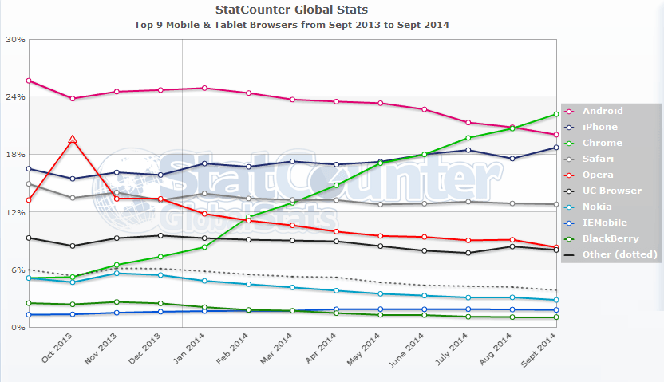

UTN 2014
Algunos detalles para los que (todavía) no me conocen ...
“The World Wide Web (known as "WWW', "Web" or "W3") is the universe of network-accessible information, the embodiment of human knowledge.”
Toda la información accesibile a través de la red que representa al conocimiento humano.
Web vs Web Móvil
Web 1.0, 2.0 y 3.0
La importancia de la Web móvil
“Mobile was the final front in the access revolution. It has erased the digital divide. A mobile device is the internet for many people.”
Fuente: Stat Counter
Medios de accesos a la Web
Está cambiando la manera en la que accedemos a la Web
Fuente: Stat Counter
Sistemas Operativos: Windows, OSX y GNU/Linux
Navegadores: Firefox, Google Chrome, Internet Explorer, Safari, Opera y más
Sistemas Operativos: Android, iOS, Windows Phone y más
Navegadores: Android Browser, Chrome, Firefox, Safari, Internet Explorer y más
Smart TVs con navegadores propios
Relojes con sistemas operativos (Apple Wacth, Google Wear y más)
Autos con sistemas operativos (Android Auto y Apple Car)
Lentes!!! Lentes con sistemas operativos (Google Glass)
Sistemas operativos 100% construidos en tecnologías Web (ChromeOS, FirefoxOS)
Navegadores Web mediante SMS (Cosmos Browser)
Estos no es la web pero ...
Tecnologías Web usadas en otros fines
Es para todos!
“Diversity is not a bug…it’s an opportunity.”
“Americans deserve a government that works for them anytime, anywhere, and on any device..”
Los personas con discapacidad deben tenerse en cuenta
La Web es democrática, cualquier persona es un usuario potencial y puede serlo en cualquier contexto.
No todo es un jardín de rosas
Menos del 20% (mundial) de los móviles funcionan en una red 4G
En Argentina todavía no existen (recientemente se han licitados)
Fuente: Reporte de Ericsson
Uno de cada dos teléfono NO es un Smartphone
Fuente: Reporte de IDC - Worldwide Quarterly Mobile Phone Tracker
¿Cuánto esperan los usuarios? (incluso en móviles)
“How long will users stay on a Web page before leaving?
Not very long. Users often leave Web pages in 10-20 seconds, but pages with a clear value proposition can hold people's attention for much longer.”
¿Cómo resolvemos este problema?
Construimos para el futuro
La Web es (casi) totalmente fluida por diseño
Eso nos enseña el proyecto Fluidity, generalmente es el desarrollador quién la rompe.
Componentes de una Web Apdatable
El conflicto del contenido
Estrategia de contenido: Content over navigation y Content is the king
Los sitios Web han engordado en el último tiempo
Fuente: Website Optimization
Conceptos sobre performance
“Page weight isn't the only measure; focus on perceived performance”
La performance en parte es un atributo que se percibe.
“Expect RWD to add ~10% [...] If you dig in, you can see that most of my rendering and latency problems are being caused by classic modern day web design performance [...]”
Nuevamente es el desarrollador quién rompe las cosas.
Componentes de una web performante
Herramientas de performance
“It looks like you're on a train. Would you like me to show you the insultingly simplified mobile site?”
Estoy en la calle, quiero ir a un lugar y no conozco con que colectivo llegar. Es obvio que voy a querer consutarlo desde mi móvil
Además ... no todos son smartphones con acceso a aplicaciones
Seguir los estándares es un camino a evitar los inconvenientes de la fragmentación
Fuente: Stat Counter
Un solo diseño no tiene que ser para todos.
Aportar una mejor experiencia a quién pueda disfrutarlo o obtenerlo (Soportar y optimización)
Imagen cortesía de JD Hancock
Trataremos de "movilizar" el sitio de Rosario en Bici
Cuestiones a corregir
Preguntas
Cortesía de Jay Gooby
Gracias
Imagen cortesía de Jon Ashcroft
p4bl1t0 en GitHub / http://p4bl1t0.github.io/mobile-web-slides
pabloluisbotta(arroba)gmail.com